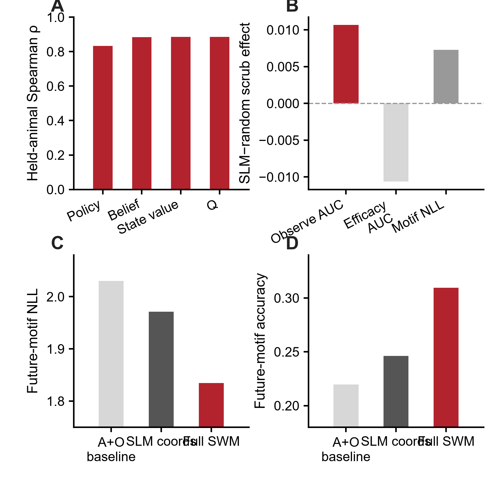

从观察到行动：动物如何主动采样社会信息，并把它变成自己的行为
SOE 研究动物如何判断什么时候值得看别人、从观察内容中提取可用信息、把信息转成自己的行动，并把结果归因给不同的社会来源。SLM 把这条链拆成可以预测、可以在 VTA 中读取、可以被 JAWS 选择性破坏、也可以装进人工 agent 的计算变量。
Default behavioral SLM 定义为 mechanistic SLM + generic choice persistence。它相对 Current+CK 在 20/27 动物更好，相对 TinyRNN 在 23/27 更好；full-history MLP 仅用于容量审计。
来源标记的 credit、状态门控的信息价值、多时间尺度状态，以及信息采样与行动执行的分离。
一次 Observe 中，VTA DA 按事件时间依次对应 pre-outcome sampling policy、sampling APE 与 post-outcome social-credit / reward update。
JAWS 在 10/10 动物中降低 post-outcome Active social-credit update，并在 9/10 动物中降低 session-scale accumulated Active credit。
learner cohort 中，看到示范鼠正在进食后 3 秒内自身 Feed hazard 上升；控制当前自身/社会状态后仍 +6.09 pp。
通用 recurrent agent 学出的策略可被 SLM multiscale-memory 与 source-credit coordinates 进一步解释；30/30 个 run 的 Brier、NLL、AUC 都改善。
下面按“行为现象 → 信息价值 → 多时间尺度 → SLM → Feed → agent → VTA → 因果 → 泛化 → 跨物种”组织。页面按生物学问题递进组织，每一层都说明下一层分析为何必要。
动物学习将社会观察转化成自己的行动
40 只动物中 35 只的 SRI 从早期到晚期上升。learner 的关键变化集中在 Observe→Active 转化，gross observation rate 的变化较小。
SRI 总体上升；r_rb=.895，P=2.36×10⁻⁸。
learner 转化平均提高 +.0426；P=.00297。
conversion progress 与 ΔSRI 相关；P=.0086。

社会信息的价值取决于它能否改变下一步选择
held-out social information value 直接问：加入同伴信息后，对动物真实选择的预测改善了多少？
median +.00365 nats/decision；r_rb=.725，P=.000268。
late−early median −.00378；P=.00194。
离自己的食口越远，社会信息越有用。

同一套社会学习策略同时保留秒级、约五分钟和跨天经验
这些时间尺度在最终 SLM 之前已经由独立 held-animal 分析得到；模型随后把它们整合进同一个状态表示。
Active、Passive 之后立即更容易停止 Observe；re-entry 同时下降约 8–9 pp。
γ=.95–.97 对应 20–33 个 event；multievent history 带来 ΔNLL=.0348，单一 exponential eligibility 只有约 .0001。
真实 day order 在真实顺序 + 500 个 within-animal shuffle 中排名第 1（P=.001996）；保留前一天 prior 后 29/40 动物改善（P=.0125）。

默认行为模型定义为 SLM mechanistic state + generic choice persistence
SLM 的目标是用紧凑、可实验检验的变量解释社会信息采样。choice persistence 吸收通用 serial choice bias，保留在默认行为模型中；policy、APE、source-specific credit 与 value 构成机制核心。
prevalence、clock、previous choice、current-state 依次建立没有学习机制时能达到的预测水平。
mechanistic SLM core 超过 RW、WSLS、Q-family、forgetting-Q 与 choice-kernel 等受限模型。
相对 Current+CK 为 20/27 更好（P=.00169）；相对 TinyRNN 为 23/27 更好（P=1.59×10⁻⁵）。
default SLM 与 full-history MLP 的 paired difference 不显著；这里用于确认预测容量已接近 flexible history ceiling。

default behavioral SLM、APE 定义、RPE comparator、JAWS credit 与 Feed 阶段边界。

不写入 SLM 方程的 Social World Model，会独立恢复 SLM 决策坐标，并额外学到“什么时候社会观察真正有用”
SLM 从可解释的 policy、value、prediction error 和来源特异 credit 出发。SWM 则反过来问：不给模型这些结构，只让 recurrent model 从行为序列学习，它会不会自己找到相似的决策空间？又会不会学到 SLM 没有显式写出的状态？
ΔActive = P(Active|z,Observe) − P(Active|z,Other) 能预测一次真实 Observe 最后是否转成 Active；27/27 held-out learner 都高于 chance。
在真实 Visual Block session 中，两个最直接可见线索的 AUC=.491；加入 frozen SWM efficacy 后升到 .581（10/14，P=.0165）。但相对完整 13-cue readout 的额外增量较小且不显著（P=.213）。
把 held-out social trajectory 换成 day/duration 匹配、但内容来自别的训练轨迹后，26/27 动物下降（P=1.49×10⁻⁸）；完全去掉 social channels 重训也得到同方向结果。
预测未来 12-motif 时，SWM 超过最强 direct nonlinear MLP（NLL 1.871；25/27 动物），而且 1、3、5 step horizon 的优势都保留。




SWM 对生物学故事到底增加了什么？
第一，它给出一个真正前瞻的量，解释动物什么时候值得去采样社会信息。第二，一个完全没有写入 SLM 方程的模型自己恢复出 SLM-like 决策坐标，而且这个子空间确实参与 Observe policy。第三，SWM 还保留了 SLM 坐标之外、预测未来行为序列所需要的动力学。
但两条边界必须保留：policy–efficacy alignment 随训练增强，在 learner 与 non-learner 中都可变化，因此当前结果不支持 learner-exclusive 解释。另外，跨任务 pretraining 只在部分低数据条件下提高 sample efficiency，并没有证明 universal foundation model。完整方法 / control authority。
一次 Observe 中采到的什么内容，会转化成 learner 自己的 Feed？
SOE 范式要求社会观察最终改变观察者自己的行动。这里直接检验 sampled content，并控制当下 self-state、social geometry 与简单 Observe recency。
26 只动物在 ≤3 s 分析中同时有 dem-feed 与 no-dem-feed 决策。
.2273 vs .1519；17/26 为正，P=.0377。
冻结 self + current-social predictor 后，residual effect 仍成立；P=.0445。
paired 动物 raw dem-feed contrast 平均增加 +7.74 pp，P=.0448；residualized progression 为正向趋势，P=.243。

第一→第二 analyzed session 的 raw / state-residualized dem-feed hazard sensitivity。
SLM variables 可以生成行为，也能紧凑解释 flexible recurrent agent 学出的策略
recurrent agent 学出的 policy 在加入 multiscale-memory 与 source-credit coordinates 后，30/30 个 fold × seed × reward run 的 Brier、NLL、AUC 全部改善。这说明这些坐标能够概括解决 social-information task 的策略结构。
fitted SLM 在不重放 held-out outcome 的情况下重建整体学习轨迹。
autonomous SLM 保留大量真实行为状态组织。
SLM coordinates 对 independently learned policy 提供稳定增量解释。

单一 RPE 可以解释 outcome 后的一部分 DA；完整 Observe episode 还包含 sampling policy、APE 和 post-outcome credit
关键证据来自时间顺序。Early 与 Middle 都发生在 social outcome 可用之前；reward prediction error 与 social-credit update 只有在 outcome 出现后才被定义。
sampling-policy r_rb=.810，P=.0469；Q/RPE 在这里接近 0（.048），CK/Q+CK 为负，TinyRNN 为显著反方向。
控制 CK、Q+CK 或 Q error 后，APE×learning 仍保持 ρ=.667；reverse competing-error tests 为负。
SLM RPE / belief update 为 .867 / .956；Q-all RPE 同样为 .867。因此 outcome 后 DA 单独不足以区分机制。

Visual Block 与 JAWS 分别破坏社会信息链条中的 information access 和 post-outcome teaching
Visual Block 降低有用社会内容的进入；JAWS 弱化 successful social outcome 后的 VTA-dependent teaching。两种 manipulation 下 gross observation 都大体保留。


.320→.193；8/10 lower，P=.00391。
noncontingent .360→.325。
OFF +.002490 → ON −.000815；P=.001953。
Normal .0967 → full JAWS .0120；P=.003906。
SOE 训练形成的社会学习状态，会影响之后面对陌生食物和社会威胁时的行为
observational fear 与 SAFN/food neophobia 是两种不同的后续任务，但 prior SOE experience 都改变了动物如何使用社会信息。
D1 shock velocity；P=.00433；late shock observation 也增加。
shock-velocity change δ=−.944；P=.00433。
social-trained 更快开始吃；P=.01948。
初始 feeding engagement 更持续；P=.00866。

SLM latent 可以预测“以后会怎样泛化”，而且不同 latent 对应不同的生物学结果
同 6 只 Social-trained 小鼠后来进入陌生食物和 observational-fear 实验。新的分析不再把所有后续行为压成一个总分，而是问：SOE 中形成的具体计算变量，能不能预测与其功能相匹配的后续表型？
严格 leave-one-mouse-out 中，SLM credit family 相比只用 late SRI、ΔSRI、late conversion、Δconversion 的行为 family，在 6/6 小鼠中都降低预测误差。median absolute error 从 43.83 s 降到 12.43 s；r_rb=1，P=.0156；完整 permutation model comparison P=.0486。
SOE 晚期 |APE| 与之后 shock-locked velocity 强相关（exact P=.0167；四个 fear endpoint family BH q=.0333）。这个关系最集中在中间 10 次 shock，timecourse correction 后 q=.0417。
全 40 只 SOE 动物中，Δ|RPE| 对应 ΔObserve→Active conversion（ρ=.615，P=2.4×10⁻⁵），late credit 对应 late conversion（ρ=.558，P=.000181），ΔQ / Δpolicy 对应 ΔSRI。


主映射与 exact permutation。
3 种 credit 定义 × 2/3/4-day window。
双映射、nested prediction 与生物学解释。

Active-credit maintenance → 陌生食物 initiation：ρ=.886；late |APE| → fear shock reactivity：ρ=.943。
credit → fear 只有 ρ=.143；APE → food 为 ρ=−.086。两条轴因此不构成单一“总体社会性”得分。
matched−mismatched contrast=1.771；food 与 fear outcome 分别做全部 720×720 exact permutation。
social credit 和 APE 分别映射到不同的后续表型
把 2 个 latent × 2 个后续行为放进同一张 2×2 映射里，直接检验匹配关系是否强于不匹配关系。
严格 out-of-sample 审计
food 的 nested credit-family model 为 R²=.713，permutation P=.0625；但相比同样 nested 的 simple-behavior family，6/6 小鼠绝对误差更低，完整模型比较 P=.0486。fear 的 APE family 为 R²=.307，P=.0514，但 predicted↔observed rank 为 ρ=.829，P=.0111；与此同时，简单 SOE behavior 也能解释一部分 shock-velocity variance（R²=.548，P=.0333）。当前证据支持不同计算 latent 预测与其生物学功能匹配的后续表型，其中 social-credit 对 novel-food initiation 的增量价值最清楚。
较早的四面板 nested-validation 图继续保留作审计：打开 v2 图。

nested leave-one-mouse-out 与 exact permutation。
支持 food 6/6 更低 held-out error。
first / middle / last shock epoch 与校正后的统计。
最后 2、3、4 天 SOE 定义的稳健性。
SLM latent 与原 SOE 学习指标的关系。
完整生物学解释、模型比较和 prospective prediction。
跨任务、跨物种反复出现四类计算模块
每个外部数据集都明确标注究竟检验 source credit、information gating、multiscale state 还是 sample→action separation。
大鼠 demonstrator>moving object、macaque source-aware state；primate self/other RPE 暂按 literature/audit 级别。
SOE、cooperative role×uncertainty、Aeon partner history 相互呼应。
Human、rat DANDI001169 与 macaque structured state 都通过了更强的 matched comparator。
SOE 是直接证据；marmoset gaze→evidence→decision 是目前最接近的外部架构类比。


同一 OOF contract 下 structured multiscale 优于 nested held-rat CV 选出的最强 classical RL；CK 在 5/5 outer folds 被选中，r_rb=.891，P=.00488。独立的 training-fold BIC sensitivity 也得到完全相同的选择与 outer-test 结果。
Brier / NLL / AUC 都支持 structured multiscale：P=.00488 / .00488 / .00293。绝对效应较小，但三个 metric 的方向一致。
严格复用原 violation filter、5-fold held-rat split；test rat 从未参与 comparator family 的选择。


所有关键数字都可以回到精确 CSV / 机制说明
中文页面强调生物学逻辑；数值 authority 与英文版共享同一套版本化结果。
3.35 英寸方图、600 dpi、2n+1 间距、配对数据、灰阶/红色层级与网页展示规范。
四个核心计算、comparator 审计与 frozen-core transfer。
Human / rat / macaque 的 matched comparator、独立统计单位与 inference boundary。
10 只 held-out rat 的 classical vs multiscale Brier。
每个 outer fold 内所有 classical family 的 inner held-rat CV score。
Brier / NLL / AUC 的 paired held-rat 结果。
same-animal、family correction、nested LOOCV 与下一步独立验证。
按生物学 domain 分组的 exact test 与 family correction。
每个训练 fold 内重新做 latent-family selection 的 out-of-sample 检验。
切换回英文版本与更完整的审计表。